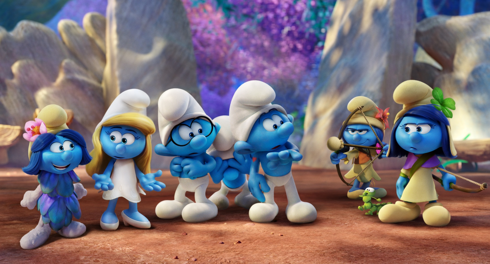
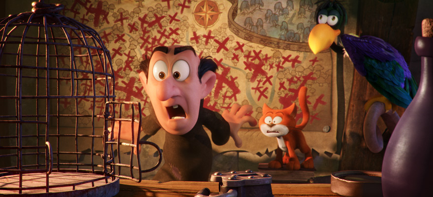

Sinopsis Film

Film Smurfs : The Lost Village memfokuskan kisah pada pencarian jati diri Smurfette (disuarakan oleh Demi Lovato). Smurfette sebagai satu-satunya smurf wanita di desa merasakan kegundahan dan kegelisahan. Hal ini dikarenakan ia merasa hanya dirinyalah satu-satunya Smurf yang tidak memiliki keahlian. Smurfette memang berbeda dari yang lain, bisa dikatakan Smurfette bukanlah smurf “asli”.
Smurfette mulanya diciptakan oleh Gargamel sang penyihir jahat yang berniat menguasai keahlian para smurf untuk menjadikannya penyihir terhebat. Smurfette yang telah diciptakan dari bongkahan tanah liat dan percikan bumbu sihir ditugaskan menuju desa smurf, namun ternyata Papa Smurf (Mandy Patinkin) juga mempunyai keahlian sihir. Smurfette yang semula jahat kemudian berubah menjadi smurf yang baik.

Sementara kegelisahan terus menghantui Smurfette. Dan pada suatu hari ketika ia bermain bersama Smurf yang lain yaitu Hefty (Joe Manganiello), Brainy (Danny Pudi) dan Clumsy (Jack McBrayer) di hutan, Smurfette secara tak sengaja melihat makhluk misterius yang berlari menuju hutan terlarang. Makhluk itu meninggalkan barang yang menyerupai topi smurf namun dengan warna yang berbeda.

Tak lama setelah pertemuan Smurfette dengan makhluk asing tersebut, Smurfette diculik oleh burung peliharaan Gargamel dan dikurung di kediamannya. Gargamel curiga dengan topi yang ditemukan oleh Smurfette. Dan setelah diselidiki, ternyata topi itu merupakan milik Smurf lain yang tinggal di hutan terlarang. Gargamel langsung saja memiliki niatan jahat untuk menuju desa smurf itu dan menguasai smurf jenis baru ini.
Smurfette dan kawan-kawan lantas tak ingin Gargamel berhasil mewujudkan niat jahatnya. Mereka kemudian diam-diam menuju hutan terlarang walaupun sebelumnya dihukum oleh Papa Smurf karena telah menghilang. Perjalanan yang seru dan mendebarkan pun terjadi selama Smurfette, Hefty, Brainy dan Clumsy menuju desa tersebut.
Balik Ke Atas